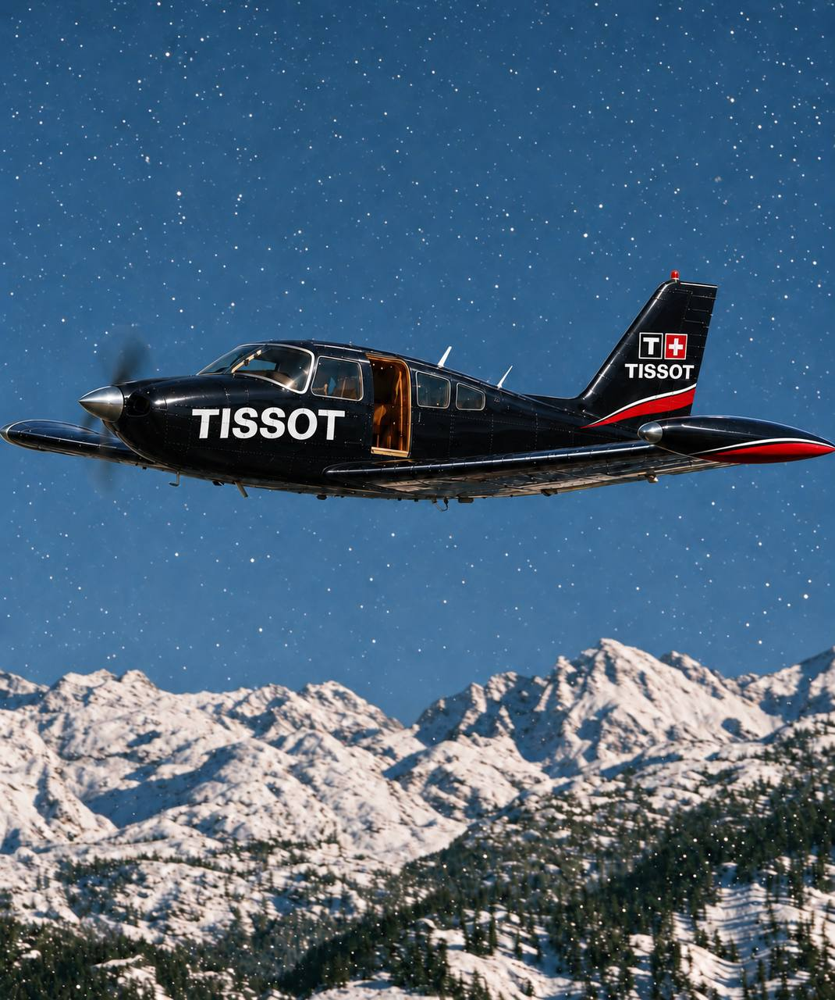
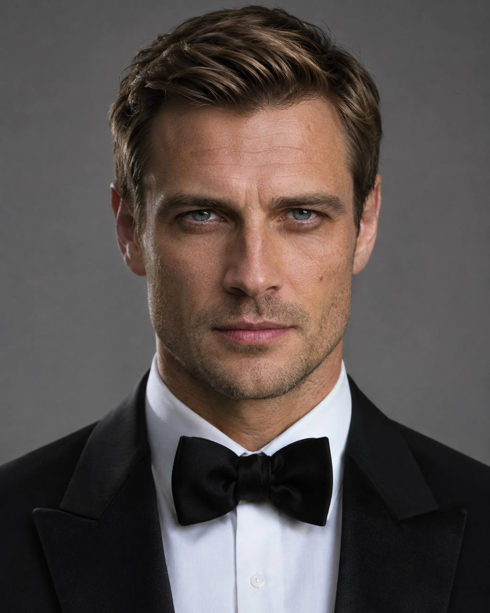
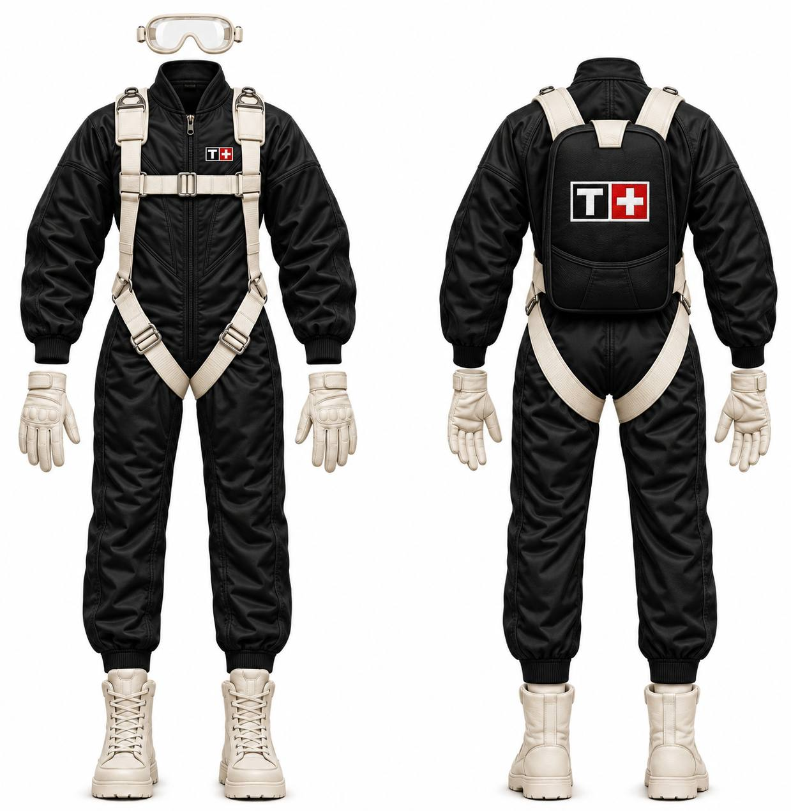
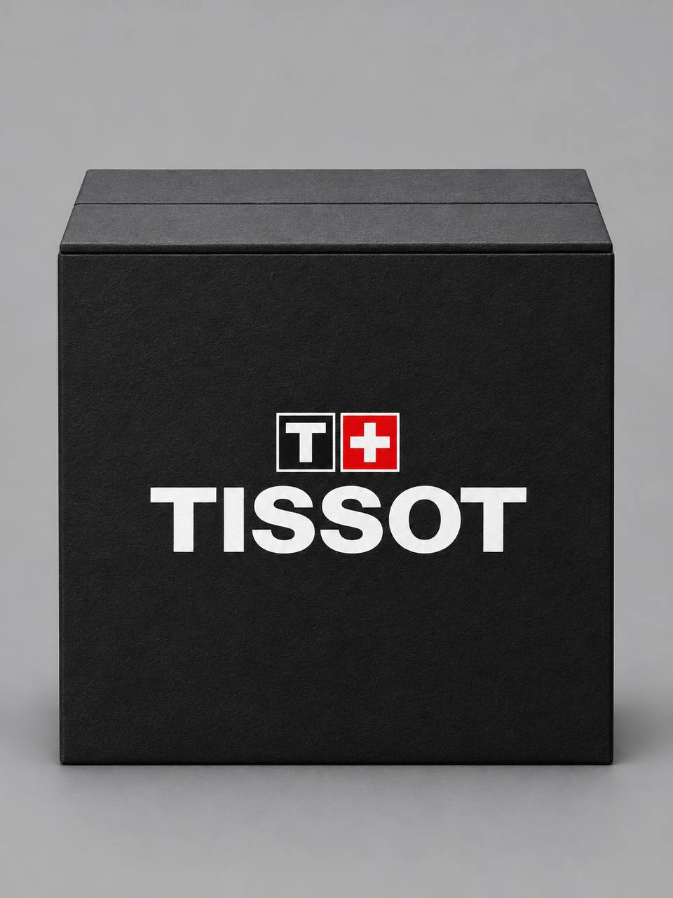
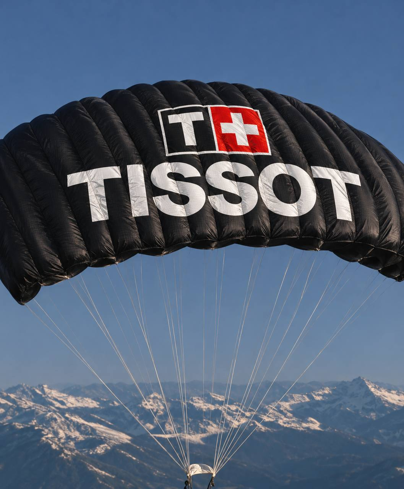

The Skydrop
Товар в свободном падении
Порыв ветра вырывает коробку из рук героя. Он раскрывает парашют и успевает поймать её в воздухе. Собери эту сцену со своим товаром в эстетике рекламы 1980-х.
- 12 секунд
- 9:16
- 24 кадра/с

Пять референсов
Загрузи изображения именно в этом порядке. Нажми на фото, чтобы скачать оригинал. Для другого бренда замени товар и подготовь экипировку, самолёт и купол с нужной символикой.

@image1Лицо героя
Черты лица, волосы и фактура кожи. Одежду задаёт следующий референс.

@image2Экипировка
Комбинезон, подвесная система, очки и перчатки на обеих руках.

@image3Товар
В примере это коробка Tissot. Для своей версии возьми предмет, который помещается в ладони.
- @image4
Самолёт
Форма фюзеляжа, открытая дверь и окраска. По промпту надпись остаётся только на борту.

@image5Купол и цвет
Форма парашюта и логотип в финале. Свет и цвет этого кадра задают вид всего ролика.


Как запустить
- Открой видеогенерацию в SYNTX и выбери режим с несколькими изображениями-референсами.
- Добавь пять фото по порядку, от портрета до купола. Выставь 9:16, 12 секунд и включи звук.
- Скопируй английский промпт целиком. Имена
@image1–@image5связывают текст с твоими файлами.
Мастер-промпт
Читать полный промпт
THE SKYDROP – MASTER PROMPT
A character jumps from an airplane filming a selfie with a small product; a wind gust tears the product from their grip, they deploy their parachute, the product falls back to them and they catch it; final aerial shot of the character descending under their branded canopy above snowy mountains. 12 seconds, 8 shots, 1980s film look.
Duration: exactly 12 seconds. Aspect ratio: 9:16. Motion: 24 fps.
Audio: ambient and action sounds plus two scripted lines only. No BGM, no music.
REFERENCES
@image1 – THE CHARACTER’S FACE AND IDENTITY. Use the exact identity of the character in @image1: face structure, eye shape and color, nose, mouth, skin or surface texture, hair if they have any, and their overall nature. Reproduce their facial features as precisely as possible in every shot. Do not use the clothing, background or lighting of @image1.
@image2 – THE CHARACTER’S COMPLETE OUTFIT, INCLUDING GOGGLES AND GLOVES. Dress the character from @image1 in exactly this outfit: every garment, color, panel, strap, buckle and boot shown in @image2. The goggles from @image2 are worn over their eyes and the gloves from @image2 are worn on both their hands in every shot, from the first frame to the last. The character wears only what @image2 shows. Do not use the background of @image2.
@image3 – THE PRODUCT: one small object that fits in one hand. Reproduce it exactly: shape, real size relative to a hand, proportions, colors, materials, logo, lettering, packaging details. If it has a handle or strap, it is held by that handle or strap; if it has none, it is gripped firmly in the hand. Its branding faces the camera whenever the product is shown to the lens. Do not use the background of @image3.
@image4 – THE AIRPLANE ONLY. Reproduce this exact airplane: its shape, proportions, colors, markings and its exit door. Do not use the colors, light or grade of @image4.
AIRPLANE LETTERING RULE: the airplane carries lettering only in the exact place where @image4 shows it – on the side of the fuselage, exactly as in @image4 – and nowhere else. The wings, both on top and underneath, the belly and underside of the fuselage, the tail and the horizontal stabilizers carry no text, no letters, no words and no logos at all: they are clean plain paint in the airplane’s base color.
@image5 – THE OPEN PARACHUTE CANOPY AND THE COLOR GRADE FOR THE WHOLE FILM. Reproduce the canopy from @image5 exactly: its shape, cells, colors, lettering or logo, and suspension lines. Every shot of the film, from the first frame to the last, is graded exactly like @image5: its light, palette, atmosphere and film texture. Do not copy the composition, camera angle or framing of @image5; every shot is framed only as this text describes. Do not use any person or figure that may appear in @image5; the one under the canopy is always the character from @image1 in the outfit from @image2.
Everything else comes only from this text.
LOCATION – SAME SKY IN EVERY SHOT
High above a range of snow-covered mountain peaks with dark pine slopes far below. The sky, light and atmosphere follow @image5, with the sun from the same direction in every shot and light snowflakes drifting through the air. The sky contains only the airplane from @image4 (shots 1–2), the character, their parachute and the product from @image3.
CHARACTER
The character from @image1 in the outfit from @image2. Their hair, if they have any, is loose and moves with the wind.
In every shot, from the first frame to the last, the goggles from @image2 are over their eyes and the gloves from @image2 are on both their hands.
Selfie shots are filmed by a camera held in their gloved LEFT hand at arm’s length. The camera is the viewpoint itself and is never visible in the frame: we see only their LEFT arm reaching toward the lens and leaving the frame at the lower edge.
Their gloved RIGHT hand does everything else and holds only the product: it holds the product, pulls the deployment handle, catches the product.
Voice: a natural voice that fits the character from @image1, in fluent American English, breathy from the wind. Acting: spontaneous and natural for this character, clearly readable shifts from joy to shock, panic and relief; natural eyes, real breathing, no theatrical grimaces.
STYLE
CAPTURE: 1980s 35mm color film. Selfie footage: 84° (≈20–24mm) handheld at arm’s length, slightly below face level, straight lines, light natural shake. External shots: 47° (≈50mm) aerial camera.
PALETTE: graded exactly like @image5 in every shot. The colors of the airplane, the outfit, the product and the canopy are the saturated accents, softened by the film.
LIGHTING: as in @image5 – the same sun direction, sunlit highlights on skin and fabric, atmospheric haze between distant mountain ridges, gentle halation on bright highlights.
TEXTURE: the 1980s film look of @image5 – the same contrast, shadows, grain and optical softness; natural skin or surface texture, individual hair strands if any, no beauty retouch, no modern digital sharpness, no CGI sheen.
Same grain, grade, contrast and sun direction in every shot.
DIALOGUE – each line spoken once, by the character, in this order
CHARACTER (in fluent American English, fast, frightened): «Oh no, no, no, no!»
CHARACTER (in fluent American English, soft, breathless): «Oh my God...»
SOUND – DIEGETIC ONLY
Ambient and action sounds only. The only sounds are: rushing wind, the airplane engine in shot 1, fabric and hair flapping, the product fluttering in the air, parachute deployment and canopy fabric, harness straps tensioning, their breathing, and the two scripted lines.
Rushing wind is present from the first frame to the last frame and continues through every cut, getting softer once the canopy is open.
Only the scripted lines are spoken. No BGM, no music, no score, no melody, no humming, no risers, no whooshes, no stingers.
TIMELINE
SHOT 01 | 0–2s | SELFIE MEDIUM CLOSE-UP, filmed from the camera in their LEFT hand at arm’s length, 84° (≈20–24mm), slightly below face level
Graded exactly like @image5 from the first frame.
The character from @image1, wearing the outfit from @image2, goggles over their eyes, gloves on their hands, stands in the open exit door of the airplane from @image4 in flight, cabin interior behind them. Their gloved RIGHT hand holds only the product from @image3. Their LEFT arm reaches toward the lens; no camera is visible in the frame. Their eyes are on the lens.
At 0s they give the lens a quick excited smile. At 1s they push off forcefully and jump out through the door. The camera stays in their LEFT hand and falls with them; the airplane recedes rapidly upward and away behind them, seen from below: its wings and belly are clean plain paint in its base color with no lettering. Wind whips their hair and clothing back.
Sound: engine roar fading into powerful rushing wind, an excited breath.
No cut – the same selfie take continues.
SHOT 02 | 2–4s | SAME CONTINUOUS SELFIE, face in the center, sky and the small receding airplane behind them – its wings and belly clean plain paint with no lettering – no camera visible in the frame
Stable freefall, snowy mountains far below, goggles over their eyes, gloves on their hands. They lift the product from @image3 with their gloved RIGHT hand next to their face, turn its branding to the lens, tilt their head and make a playful pose with a warm half-smile, eyes on the lens. The whole product is in frame, branding readable. The product trembles in the airflow while their fingers hold it firmly.
No cut.
SHOT 03 | 4–5s | SAME CONTINUOUS SELFIE, goggles on, gloves on – THE GUST TEARS THE PRODUCT AWAY
The cause comes first and is clearly visible. At 4s a sudden violent blast of wind slams into them from the side: in the same instant their hair whips hard across their face and goggles, the whole frame jerks sharply and tilts, and their LEFT arm with the camera is knocked off line.
The same blast hits the product from @image3 and wrenches it backward.
It drags their RIGHT arm back with it until the arm is fully stretched; they clench their gloved fist tighter and fight it, but the force rips the product straight out of their closed fist. Their hand never opens on its own – the product is torn away by the wind.
For a moment their empty gloved fist stays clenched in shock, hair still lashing across their face. Then they snatch at the empty air.
The product tumbles away behind them toward the upper part of the frame, keeping its exact shape. Their smile is gone, eyes wide behind the goggles, brows up; their eyes follow the product upward. The frame keeps shaking from the gust.
Sound: a sudden loud roar of a wind blast, hair and fabric snapping, the product fluttering away, a short shocked inhale.
No cut.
SHOT 04 | 5–6s | SAME CONTINUOUS SELFIE, camera still in their LEFT hand, the gust shake fading out, goggles on, gloves on
At 5s, eyes fixed on the product above them, they say fast and frightened: «Oh no, no, no, no!»
Their gloved RIGHT hand reaches abruptly down to the deployment handle on their harness and pulls it hard. The pilot chute and parachute lines stream out behind their shoulders, the harness snaps tight and their body begins to swing upright.
Sound: their frightened voice, a sharp deployment snap, rushing fabric.
HARD CUT.
SHOT 05 | 6–8s | EXTERNAL AERIAL SHOT, 47° (≈50mm), the camera is slightly above the product, looking down at about 35°, and falls together with the product
Graded exactly like @image5.
The product from @image3 is in the center of the frame, slightly above center, occupying about 15% of the frame, fully visible, staying almost in one place with a light floating fall motion. It turns slowly and calmly around one axis, keeping its exact shape and branding. It never covers the character.
Directly below the product in depth, the character from @image1 in the outfit from @image2, goggles on and gloves on, hangs under their parachute as it opens, their face and front turned up toward the product; the canopy from @image5 inflates above and behind them near the top of the frame and never covers them. Their canopy brakes their fall while the product and the camera keep falling, so they steadily close the distance: they grow larger in the frame along the center line, rising straight toward the product, a smooth continuous approach. Their eyes are locked on the product, and they stretch their gloved RIGHT arm up toward it, their gloved LEFT hand still holding the small selfie phone. Both stay fully visible the whole shot.
Sound: the product fluttering, strong wind, canopy fabric inflating, harness straps creaking.
No cut.
SHOT 06A | 8–9s | SAME EXTERNAL SHOT, graded exactly like @image5
At 8s their gloved RIGHT hand reaches the product from @image3 in the center of the frame and their fingers close firmly around it. In one continuous motion they pull the product in and press it against their chest with their RIGHT arm, their body jolting slightly in the harness. From this moment the product is held against their chest, their gloved LEFT hand still holding the small selfie phone.
HARD CUT.
SHOT 06B | 9–10s | SELFIE MEDIUM CLOSE-UP, handheld camera in their LEFT hand, 84° (≈20–24mm), canopy lines visible above them
Graded exactly like @image5.
They are suspended under the fully open canopy from @image5, goggles over their eyes, gloves on their hands. They pull the product from @image3 to their chest with their gloved RIGHT arm and turn its branding toward the lens. Their face is still shocked, mouth open, breathing hard, eyes on the product.
No cut.
SHOT 07 | 10–11s | SAME CONTINUOUS SELFIE, goggles on, gloves on
They hug the product from @image3 tightly to their chest with their gloved RIGHT arm, glance down at it, then back into the lens. At 10s they exhale and say softly, breathless: «Oh my God...» Their shoulders drop and a small nervous smile appears. The product and its branding stay clearly visible.
Sound: relieved breath, their soft voice, calmer wind, light canopy flutter.
HARD CUT.
SHOT 08 | 11–12s | AERIAL TRACKING SHOT FROM THE FRONT, 47° (≈50mm): the camera flies in front of the character, slightly below the canopy, facing them, and sinks together with the descending parachute
Graded exactly like @image5. Framed only as described here.
The character from @image1 in the outfit from @image2, goggles over their eyes, gloves on both hands, hangs in the harness facing the camera: their face, chest and the product toward the lens, frame occupancy about 18%, in the lower third of the frame. Their gloved LEFT hand holds the small selfie phone. They hold the product from @image3 in their gloved RIGHT hand – by its handle or strap if it has one, otherwise firmly in their hand – arm slightly away from their body, product branding toward the lens.
Above them, the fully inflated canopy from @image5 fills the upper half of the frame, seen from the front, its lettering or logo reading clearly, the fabric rippling and the lines trembling in the wind.
The descent reads clearly the whole shot: the parachute sinks steadily at a calm descent rate and glides gently forward, swinging softly on its lines, and the camera sinks with it, so the snowy mountain ridges and the horizon behind them slowly rise in the frame from the first frame to the last. It looks like real aerial skydiving footage.
Final frame: the character facing the camera with the phone in their left hand and the product in their right hand, the canopy with legible lettering above them, the mountain ridges higher in the frame than at 11s, still descending; steady soft wind and canopy fabric until the last frame, clean stop.
Cuts only at 6s, 9s and 11s. The camera does not cut on its own.
CONTINUITY LOCKS
Exactly one character, one airplane, one product, one parachute.
The selfie camera in their LEFT hand is the viewpoint of every selfie shot and is never seen in the selfie frames; in the external shots it is seen as the small phone in their LEFT hand. Their RIGHT hand holds only the product and performs every product action and the deployment pull.
From the first frame to the last frame the goggles from @image2 are over their eyes and the gloves from @image2 are on both hands, with the complete outfit from @image2, including shot 08.
The product from @image3 is in their right hand from 0s to 4s, falls freely in the air from 4s to 8s, and is in their right hand and arm from 8s to the last frame. Same shape, size, colors and branding throughout.
The airplane carries lettering only on the side of the fuselage exactly as in @image4; its wings, belly and tail are clean plain paint in its base color in every frame.
The canopy is packed until 5s, opens from 5s to 8s, and is fully open from 9s to the last frame; it is always the canopy from @image5. In shot 08 the character faces the camera and the parachute keeps descending until the last frame.
Same face, hair, outfit, goggles, gloves, grade and sun direction in every shot; every shot is graded like @image5. The character in every shot, including shot 08, is the character from @image1. All 8 shots are present, in this order.
EXCLUSIONS
No extra people or characters, no other aircraft, no text, letters, words or logos on the airplane wings, belly or tail, no headwear or accessories that are not in @image2, no camera device in their right hand, no music track, no narration, no additional speech, no subtitles, no captions, no on-screen text, no end card, no fade, no watermarks, no extra fingers, no face deformation.